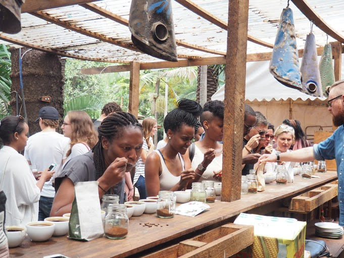

El Cafe House is small family owned business owned and operated by siblings duo Diba Mwamba (23) and Yannick Kabengele Mwamba(32). They are striving to be the best they can be and to put chain coffee shops to shame with great coffee, great atmosphere and great friendly customer service. Consistency is what sets El Cafe House apart from the rest. You will get the same exact great tasting drinks and food time and time again. They opened right at the beginning of the Covid-19 pandemic, with that being said, they are here and are open and we will continue to do everything they can to make your visit safe and enjoyable. Community is very important. They have participated in many events such as Free Live Music Drive in Concerts with curb side delivery. Back Pack and school supply drive For Coaches Mentoring Through Basketball. Back The Blue Car Show to help raise money for The Blue Line Bears Foundation. An Angel Tree for the Teen Foster Kids at National Youth Advocate Program for teens ages 11-17. In November of 2020,El Cafe House took part in the 2nd Annual African Food Festival and the 9th Annual ford Los Angeles Sandwich Festival.They took 1st place in World Best Tampa Historic Cuban Sandwich and 3rd Place for Traditional Cuban Sandwich. Quite an accomplishment they are proud of!!

Our Story
The Story Behind El Cafe House
From a humble roaster supporting adoption families to the vibrant community hub we’ve become, love has motivated every new venture at El Cafe House. At Our El Cafe House
we care deeply about who we are, who we serve, and what we do. Our mission is to ensure that every guest experiences genuine and sincere customer service that warms their heart and makes them feel better.
Our unique atmosphere is what drives guests to visit their local El Café House for breakfast, lunch, and coffee time after time. We have intentionally crafted an inviting space that breaks away from the traditional, stuffy reputation of a specialty breakfast coffee shop. We aim to make everyone feel welcome whether they prefer a high-end brew or a classic cup of Folgers.
But our sense of community goes beyond our coffee cafes. We actively involve ourselves in the community through fundraising opportunities, charity, and more. We believe that coffee shops should be the heart of a community, and we work hard to provide a welcoming space for everyone to come together and connect.
Stop by a El Cafe House for lunch and feel the love when you order a hand-roasted coffee or delicious cafe-inspired menu creation.
Our Mission
To share the joy of coffee with our community and make every day a little brighter.
